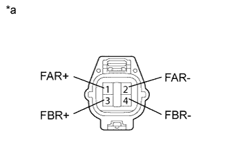
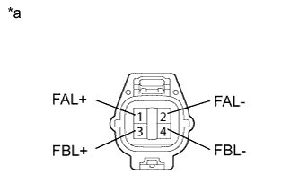
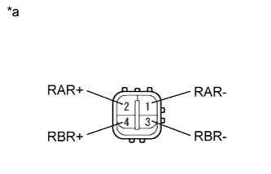
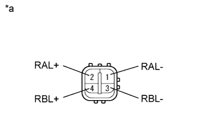

DTC C1731/31 FR Damping Force Control Actuator Circuit |
DTC C1732/32 FL Damping Force Control Actuator Circuit |
DTC C1733/33 RR Damping Force Control Actuator Circuit |
DTC C1734/34 RL Damping Force Control Actuator Circuit |
| DTC Code | DTC Detection Condition | Trouble Area |
| C1731/31 | Either condition is met:
|
|
| C1732/32 | Either condition is met:
|
|
| C1733/33 | Either condition is met:
|
|
| C1734/34 | Either condition is met:
|
|
| 1.PERFORM ACTIVE TEST USING INTELLIGENT TESTER (DAMPER STEP) |
Turn the engine switch off.
Connect the intelligent tester to the DLC3.
Turn the engine switch on (IG).
Turn the intelligent tester on.
Enter the following menus: Chassis / Air suspension / Active Test.
| Tester Display | Test Part | Control Range | Diagnostic Note |
| Damper Step FR | Changes damper step (front RH) | 1 to 16 step | The shock absorber hardens as the damper step increases. |
| Damper Step FL | Changes damper step (front LH) | 1 to 16 step | The shock absorber hardens as the damper step increases. |
| Damper Step RR | Changes damper step (rear RH) | 1 to 16 step | The shock absorber hardens as the damper step increases. |
| Damper Step RL | Changes damper step (rear LH) | 1 to 16 step | The shock absorber hardens as the damper step increases. |
|
| ||||
| OK | ||
| ||
| 2.INSPECT ABSORBER CONTROL ACTUATOR |
Turn the engine switch off.
Check the front absorber control actuator RH (when DTC C1731/31 is output).
Disconnect the A44 actuator connector.
|  |
Measure the resistance according to the value(s) in the table below.
| Tester Connection | Condition | Specified Condition |
| 1 (FAR+) - 2 (FAR-) | Always | 6.4 to 7.2 Ω |
| 3 (FBR+) - 4 (FBR-) | Always | 6.4 to 7.2 Ω |
| *a | Component without harness connected (Front Absorber Control Actuator RH) |
Check the front absorber control actuator LH (when DTC C1732/32 is output).
Disconnect the A45 actuator connector.
|  |
Measure the resistance according to the value(s) in the table below.
| Tester Connection | Condition | Specified Condition |
| 1 (FAL+) - 2 (FAL-) | Always | 6.4 to 7.2 Ω |
| 3 (FBL+) - 4 (FBL-) | Always | 6.4 to 7.2 Ω |
| *a | Component without harness connected (Front Absorber Control Actuator LH) |
Check the rear absorber control actuator RH (when DTC C1733/33 is output).
Disconnect the S1 actuator connector.
|  |
Measure the resistance according to the value(s) in the table below.
| Tester Connection | Condition | Specified Condition |
| 1 (RAR-) - 2 (RAR+) | Always | 6.4 to 7.2 Ω |
| 3 (RBR-) - 4 (RBR+) | Always | 6.4 to 7.2 Ω |
| *a | Component without harness connected (Rear Absorber Control Actuator RH) |
Check the rear absorber control actuator LH (when DTC C1734/34 is output).
Disconnect the S3 actuator connector.
|  |
Measure the resistance according to the value(s) in the table below.
| Tester Connection | Condition | Specified Condition |
| 1 (RAL-) - 2 (RAL+) | Always | 6.4 to 7.2 Ω |
| 3 (RBL-) - 4 (RBL+) | Always | 6.4 to 7.2 Ω |
| *a | Component without harness connected (Rear Absorber Control Actuator LH) |
| Result | Proceed to |
| OK | A |
| NG (Front absorber control actuator RH) | B |
| NG (Front absorber control actuator LH) | C |
| NG (Rear absorber control actuator RH) | D |
| NG (Rear absorber control actuator LH) | E |
|
| ||||
|
| ||||
|
| ||||
|
| ||||
| A | |
| 3.CHECK HARNESS AND CONNECTOR (ABSORBER CONTROL ACTUATOR - SUSPENSION CONTROL ECU) |
Check the front side absorber control actuator.
Disconnect the A44 and/or A45 front absorber control actuator connector.
Disconnect the A11 suspension control ECU connector.
Measure the resistance according to the value(s) in the table below.
| Tester Connection | Condition | Specified Condition |
| A44-1 (FAR+) - A11-7 (FAR+) | Always | Below 1 Ω |
| A44-2 (FAR-) - A11-8 (FAR-) | Always | Below 1 Ω |
| A44-3 (FBR+) - A11-1 (FBR+) | Always | Below 1 Ω |
| A44-4 (FBR-) - A11-2 (FBR-) | Always | Below 1 Ω |
| A44-1 (FAR+) - Body ground | Always | 10 kΩ or higher |
| A44-2 (FAR-) - Body ground | Always | 10 kΩ or higher |
| A44-3 (FBR+) - Body ground | Always | 10 kΩ or higher |
| A44-4 (FBR-) - Body ground | Always | 10 kΩ or higher |
| Tester Connection | Condition | Specified Condition |
| A45-1 (FAL+) - A11-3 (FAL+) | Always | Below 1 Ω |
| A45-2 (FAL-) - A11-5 (FAL-) | Always | Below 1 Ω |
| A45-3 (FBL+) - A11-6 (FBL+) | Always | Below 1 Ω |
| A45-4 (FBL-) - A11-4 (FBL-) | Always | Below 1 Ω |
| A45-1 (FAL+) - Body ground | Always | 10 kΩ or higher |
| A45-2 (FAL-) - Body ground | Always | 10 kΩ or higher |
| A45-3 (FBL+) - Body ground | Always | 10 kΩ or higher |
| A45-4 (FBL-) - Body ground | Always | 10 kΩ or higher |
Check the rear side absorber control actuator.
Disconnect the S1 and/or S3 rear absorber control actuator connector.
Disconnect the R22 suspension control ECU connector.
Measure the resistance according to the value(s) in the table below.
| Tester Connection | Condition | Specified Condition |
| S1-1 (RAR-) - R22-2 (RAR-) | Always | Below 1 Ω |
| S1-2 (RAR+) - R22-1 (RAR+) | Always | Below 1 Ω |
| S1-3 (RBR-) - R22-4 (RBR-) | Always | Below 1 Ω |
| S1-4 (RBR+) - R22-3 (RBR+) | Always | Below 1 Ω |
| S1-1 (RAR-) - Body ground | Always | 10 kΩ or higher |
| S1-2 (RAR+) - Body ground | Always | 10 kΩ or higher |
| S1-3 (RBR-) - Body ground | Always | 10 kΩ or higher |
| S1-4 (RBR+) - Body ground | Always | 10 kΩ or higher |
| Tester Connection | Condition | Specified Condition |
| S3-1 (RAL-) - R22-6 (RAL-) | Always | Below 1 Ω |
| S3-2 (RAL+) - R22-5 (RAL+) | Always | Below 1 Ω |
| S3-3 (RBL-) - R22-8 (RBL-) | Always | Below 1 Ω |
| S3-4 (RBL+) - R22-7 (RBL+) | Always | Below 1 Ω |
| S3-1 (RAL-) - Body ground | Always | 10 kΩ or higher |
| S3-2 (RAL+) - Body ground | Always | 10 kΩ or higher |
| S3-3 (RBL-) - Body ground | Always | 10 kΩ or higher |
| S3-4 (RBL+) - Body ground | Always | 10 kΩ or higher |
|
| ||||
| OK | ||
| ||